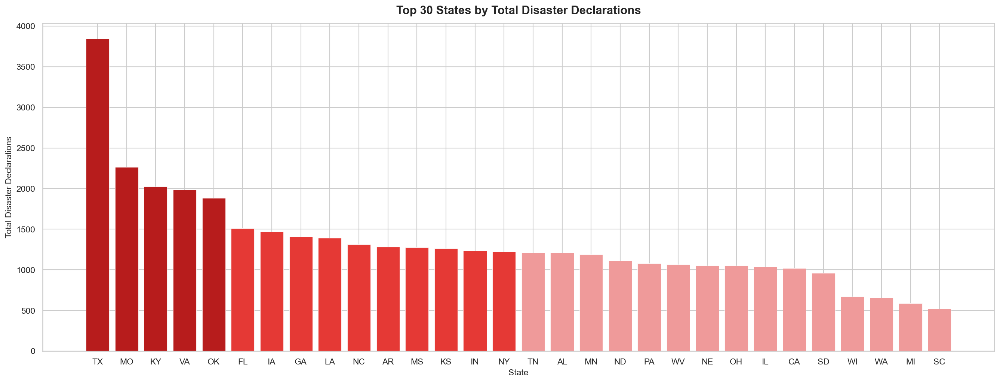
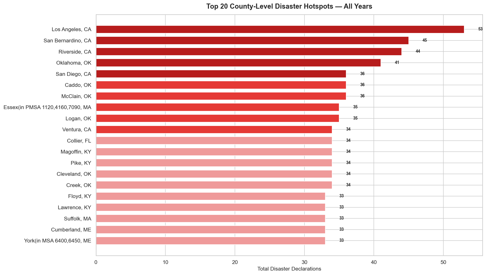
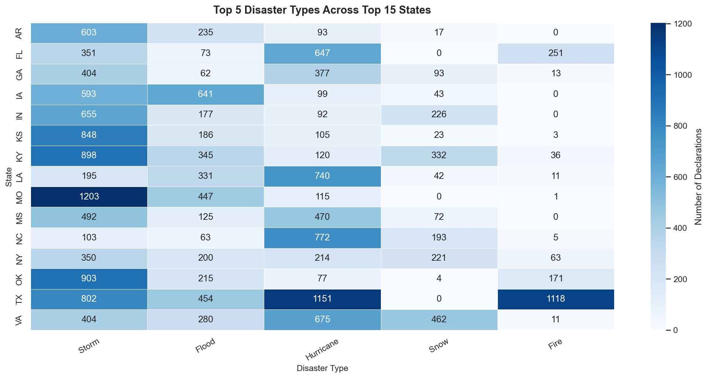
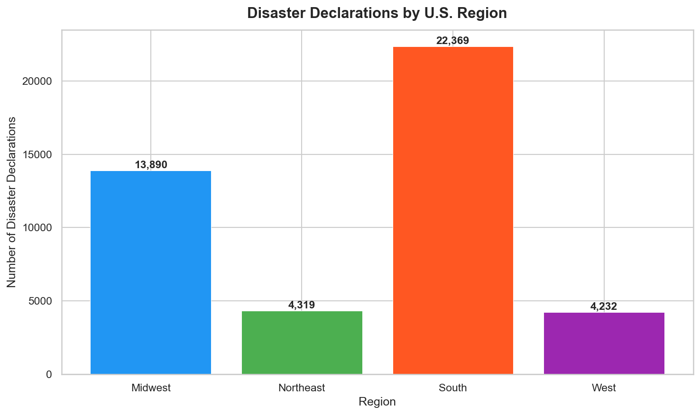

Milestone 3
🗺️ Geographic Patterns
Which states and counties are most affected by natural disasters?
🗺️ Choropleth Map — Total Declarations by State
Color-coded US map showing disaster declaration intensity. Darker shades indicate more declarations.

🏅 Top 30 States
Bar chart ranking states by total disaster declarations. Texas leads by a significant margin.

📍 Top 20 Counties
County-level analysis revealing the most disaster-prone areas in the US.

🔥 State vs Disaster Type Heatmap
Cross-analysis of top states and disaster types, revealing which disasters dominate which regions.

🏢 Regional Disaster Breakdown
Disaster counts aggregated by US regions — South and Midwest lead in total declarations.
